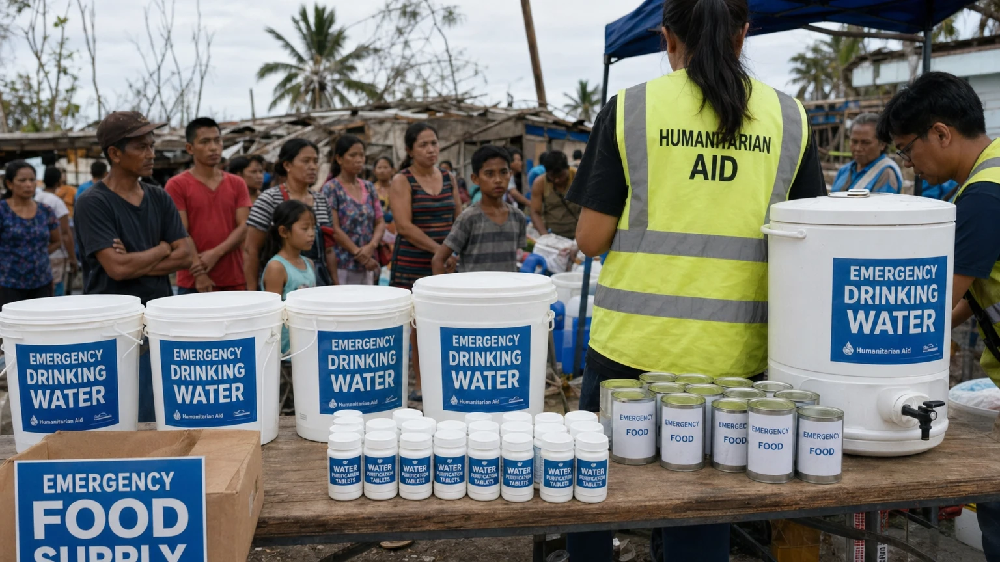

Deprem Sonrası Temiz Su ve Gıda Güvenliği
Deprem sonrasında açlık ve susuzluk hayatı doğrudan tehdit eder. Ama daha büyük tehlike bozuk suyu içmek veya zararlı gıda tüketmektir. 72 saatlik kritik dönemde su ve gıda güvenliği için bilmeniz gerekenler.
Şebeke Suyu Güvenli mi?
Depremden hemen sonra şebeke suyunu içmeyin — borular kırılmış olabilir, içine toprak ve zararlı maddeler girmiş olabilir. Yetkililerin "şebeke suyu güvenlidir" açıklaması yapana kadar bekleyin. Bu süre 24-72 saat olabilir. Alternatif: Kapalı şişe su, kaynatılmış su veya sertifikalı filtreli su.
Suyu Nasıl Güvenli Hale Getirirsiniz?
Kaynatma: en güvenli yöntem. 1 dakika kaynatın (yüksek rakımda 3 dakika). Soğuyunca içilir. Klor tableti: deprem çantasında bulunmalı. 1 L suya 1 tablet, 30 dakika bekle. İyot damlaları: 1 L suya 5 damla, 30 dakika bekle. Güneş dezenfeksiyonu (SODIS): temiz şeffaf PET şişeye doldurun, 6 saat güneşe bırakın.
Gıda Güvenliği: Neleri Yemeyin
Açılmamış konserve: şişmiş veya ezilmiş kutular atmak gerekir (botulizm riski). Elektrik kesilmişse buzdolabı: 4 saat içinde et, süt, yumurta tüketin; aksi hâlde atın (koklayarak karar vermeyin — bakteri koku vermeyebilir). Donmuş gıdalar: çözülüp tekrar donmuşsa atmak güvenli. Sel veya zemin suyuyla temas etmiş paketlenmemiş gıdalar: atın.
Deprem Sonrası Güvenli Gıdalar
En güvenli gıdalar: Kapalı konserve (şişmemiş, ezilmemiş), fabrika paketli bisküvi, kraker, kuru yemiş, kapalı paket peynir, tetrapak süt. Pişirme imkânı varsa: pirinç, bulgur, makarna (kaynatılmış temiz suyla). Tuzu minimumda tutun — susuzluğu artırır.
Su Yönetimi: 72 Saat Hesabı
Kişi başı günlük minimum: 3 litre içme + 2 litre hijyen = 5 litre. 72 saat için: 15 litre/kişi. 4 kişilik aile: 60 litre. Deprem çantasında en az 8-12 litre olmalı (kalanı filtre/kaynatmayla karşılarsınız). Su bir yere stoklandıysa yılda bir değiştirin (tat bozulur, kap kirlenir). Tam çanta rehberi için tıklayın.